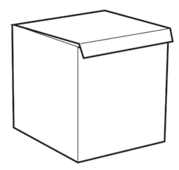
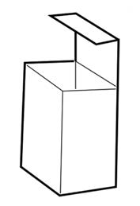
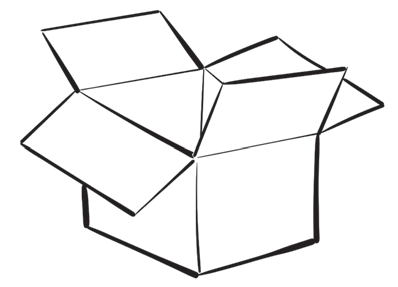

Hatua za kutengeneza makasha
1.
Chagua kasha lenye ukubwa unalotaka kuunda, kisha litatue kwa uangalifu kwa kufuata sehemu za maunganisho. Kielelezo namba 14 kinaonesha makasha yenye ukubwa tofauti;
2.
Lilaze kwenye kipande kikubwa cha kasha na chora ramani yake;
3.
Kata kufuata ramani kwa kutumia kisu au mkasi;
4.
Piga mistari katika sehemu zitakazokunjwa halafu kunja; na
5.
Unganisha kasha kwa gundi ya maji.


Kielelezo namba 14: Makasha ya karatasi yenye ukubwa tofauti
Katika hatua zilizoainishwa hakikisha unazingatia usafi ili kupata kasha lililo safi na la kuvutia kama linavyoonekana kwenye Kielelezo namba 15.

Kielelezo namba 15: Umbo la kasha la karatasi lililo tayari